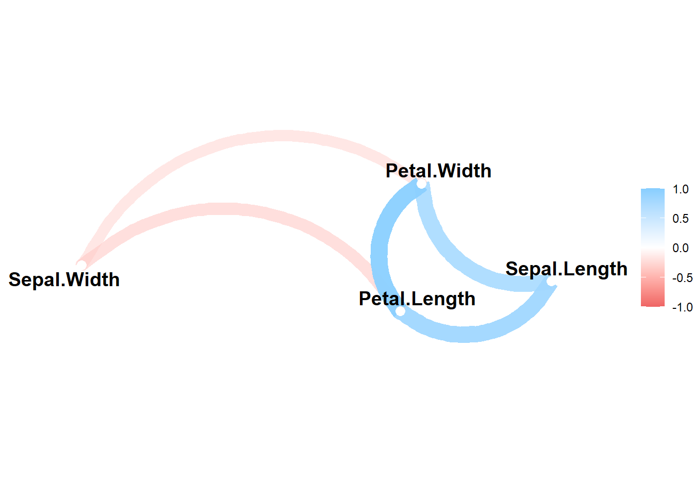
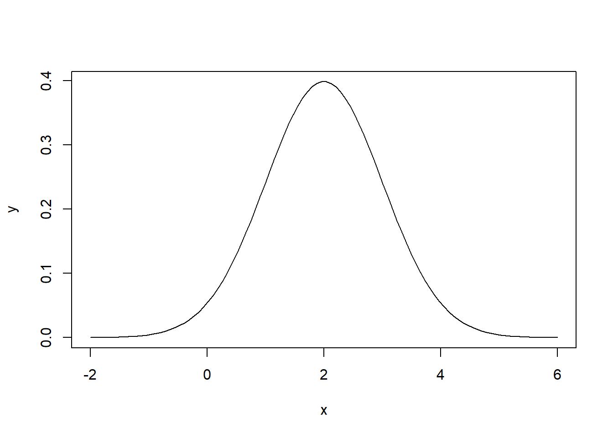
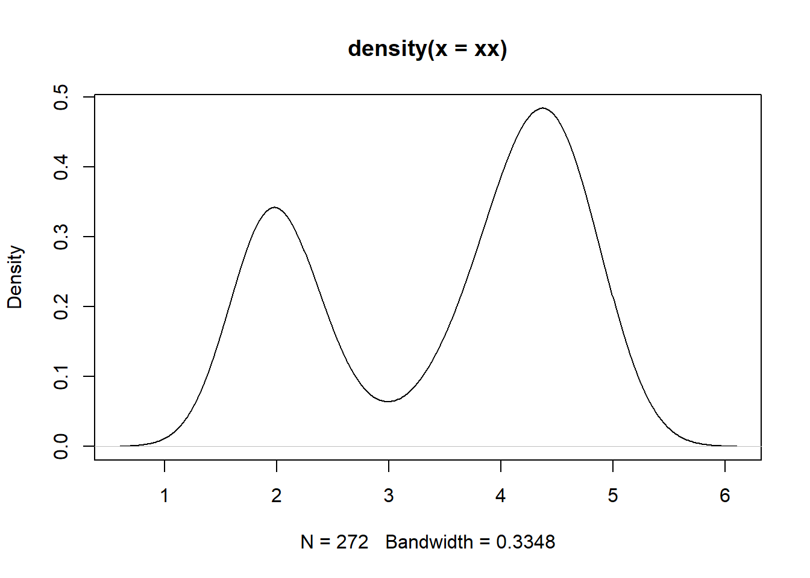
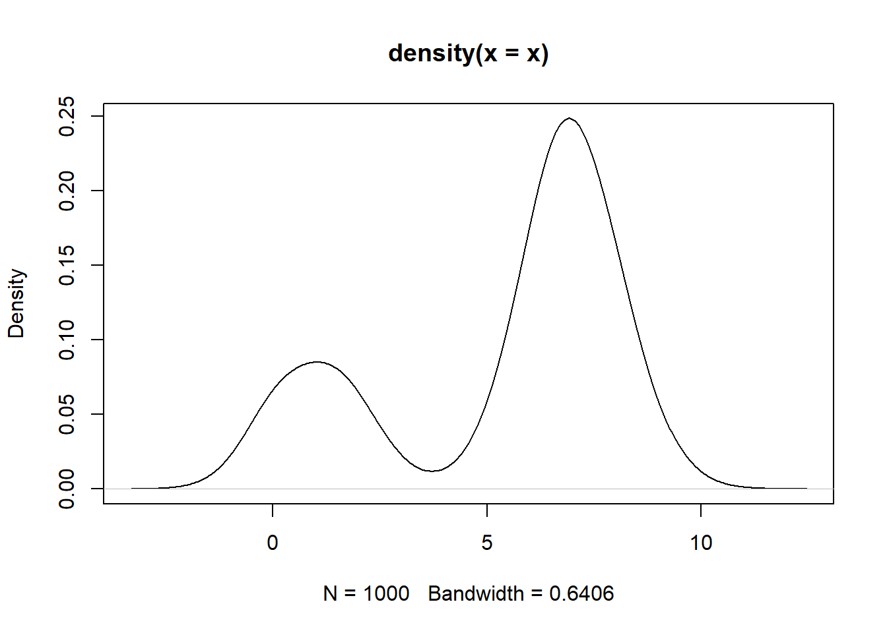
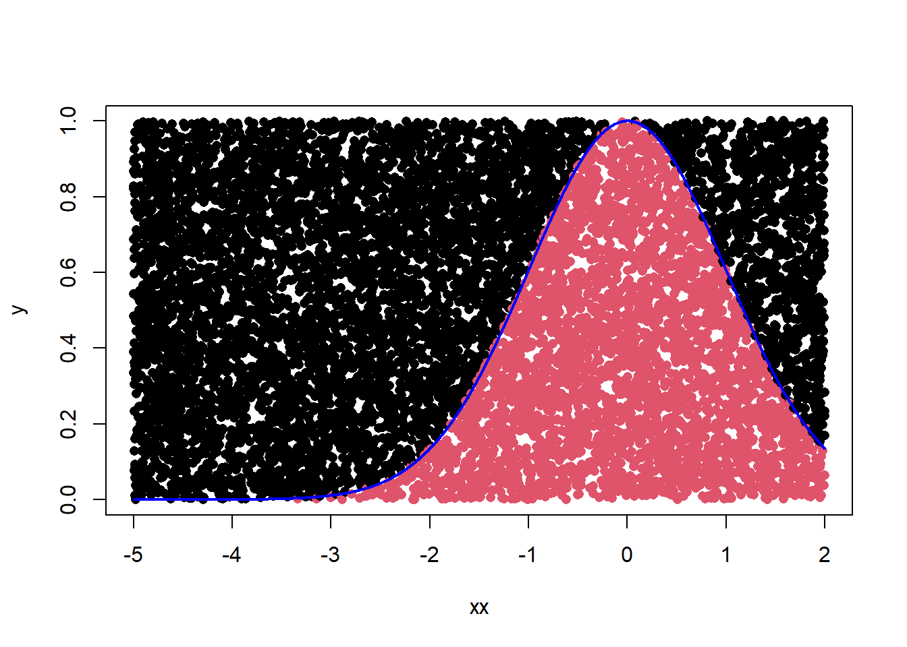

12 第11课 基本统计分析
12.1 正态分布函数及使用方法
随机数生成：rnorm()；
密度函数：dnorm()；
累积分布函数：pnorm()；
::: {.cell}
```{.r .cell-code}
rnorm(10,0,1)#generate standard random normal number
```
::: {.cell-output .cell-output-stdout}
```
[1] 2.1853829 -0.5423828 -0.7524032 -1.0074439 -0.5002176 1.8360306
[7] -0.4571698 1.0129190 0.4286696 0.6567001
```
:::
```{.r .cell-code}
dnorm(10,0,1)# probability density function
```
::: {.cell-output .cell-output-stdout}
```
[1] 7.694599e-23
```
:::
```{.r .cell-code}
pnorm(-1.96)# cumulative density function
```
::: {.cell-output .cell-output-stdout}
```
[1] 0.0249979
```
:::
```{.r .cell-code}
pnorm(1.96)-pnorm(-1.96)# significance level alpha
```
::: {.cell-output .cell-output-stdout}
```
[1] 0.9500042
```
:::
```{.r .cell-code}
qnorm(0.025)#quantile function
```
::: {.cell-output .cell-output-stdout}
```
[1] -1.959964
```
:::
```{.r .cell-code}
qnorm(0.975)
```
::: {.cell-output .cell-output-stdout}
```
[1] 1.959964
```
:::
```{.r .cell-code}
pnorm(qnorm(0.975))
```
::: {.cell-output .cell-output-stdout}
```
[1] 0.975
```
:::
```{.r .cell-code}
qnorm(pnorm(1.96))# mutual inverse function
```
::: {.cell-output .cell-output-stdout}
```
[1] 1.96
```
:::
```{.r .cell-code}
plot(x=seq(-5,5,0.01),y=dnorm(seq(-5,5,0.01)),type="l",col="red")
points(density(rnorm(100)),pch=4,cex = 0.8)
```
::: {.cell-output-display}
{width=672}
:::
:::
12.2 描述性统计
在描述性统计量的计算方面， R有很多方法，这里仅展示基础包的函数
Code
> summary(mtcars[,1:3]) mpg cyl disp
Min. :10.40 Min. :4.000 Min. : 71.1
1st Qu.:15.43 1st Qu.:4.000 1st Qu.:120.8
Median :19.20 Median :6.000 Median :196.3
Mean :20.09 Mean :6.188 Mean :230.7
3rd Qu.:22.80 3rd Qu.:8.000 3rd Qu.:326.0
Max. :33.90 Max. :8.000 Max. :472.0 \(~\) aggregate()仅允许在每次调用中使用平均数、标准差这样的单返回值函数。它无法一次返回若干个统计量。
by(data, INDICES, FUN, …, simplify =TRUE)函数用于将data中的数据，按照INDICES里面的内容拆分成若干个小的data frame，并且在每一小块data frame上应用FUN函数。
\(~\)
Code
> by(mtcars, mtcars$am,summary)mtcars$am: 0
mpg cyl disp hp
Min. :10.40 Min. :4.000 Min. :120.1 Min. : 62.0
1st Qu.:14.95 1st Qu.:6.000 1st Qu.:196.3 1st Qu.:116.5
Median :17.30 Median :8.000 Median :275.8 Median :175.0
Mean :17.15 Mean :6.947 Mean :290.4 Mean :160.3
3rd Qu.:19.20 3rd Qu.:8.000 3rd Qu.:360.0 3rd Qu.:192.5
Max. :24.40 Max. :8.000 Max. :472.0 Max. :245.0
drat wt qsec vs am
Min. :2.760 Min. :2.465 Min. :15.41 Min. :0.0000 Min. :0
1st Qu.:3.070 1st Qu.:3.438 1st Qu.:17.18 1st Qu.:0.0000 1st Qu.:0
Median :3.150 Median :3.520 Median :17.82 Median :0.0000 Median :0
Mean :3.286 Mean :3.769 Mean :18.18 Mean :0.3684 Mean :0
3rd Qu.:3.695 3rd Qu.:3.842 3rd Qu.:19.17 3rd Qu.:1.0000 3rd Qu.:0
Max. :3.920 Max. :5.424 Max. :22.90 Max. :1.0000 Max. :0
gear carb
Min. :3.000 Min. :1.000
1st Qu.:3.000 1st Qu.:2.000
Median :3.000 Median :3.000
Mean :3.211 Mean :2.737
3rd Qu.:3.000 3rd Qu.:4.000
Max. :4.000 Max. :4.000
------------------------------------------------------------
mtcars$am: 1
mpg cyl disp hp drat
Min. :15.00 Min. :4.000 Min. : 71.1 Min. : 52.0 Min. :3.54
1st Qu.:21.00 1st Qu.:4.000 1st Qu.: 79.0 1st Qu.: 66.0 1st Qu.:3.85
Median :22.80 Median :4.000 Median :120.3 Median :109.0 Median :4.08
Mean :24.39 Mean :5.077 Mean :143.5 Mean :126.8 Mean :4.05
3rd Qu.:30.40 3rd Qu.:6.000 3rd Qu.:160.0 3rd Qu.:113.0 3rd Qu.:4.22
Max. :33.90 Max. :8.000 Max. :351.0 Max. :335.0 Max. :4.93
wt qsec vs am gear
Min. :1.513 Min. :14.50 Min. :0.0000 Min. :1 Min. :4.000
1st Qu.:1.935 1st Qu.:16.46 1st Qu.:0.0000 1st Qu.:1 1st Qu.:4.000
Median :2.320 Median :17.02 Median :1.0000 Median :1 Median :4.000
Mean :2.411 Mean :17.36 Mean :0.5385 Mean :1 Mean :4.385
3rd Qu.:2.780 3rd Qu.:18.61 3rd Qu.:1.0000 3rd Qu.:1 3rd Qu.:5.000
Max. :3.570 Max. :19.90 Max. :1.0000 Max. :1 Max. :5.000
carb
Min. :1.000
1st Qu.:1.000
Median :2.000
Mean :2.923
3rd Qu.:4.000
Max. :8.000 \(~\)
使用psych包中的describeBy()分组计算概述统计量
12.3 频数表和列联表
\(~\)
Code
> table(am=mtcars$am)am
0 1
19 13 Code
> xtabs(~vs+am,data=mtcars) am
vs 0 1
0 12 6
1 7 7\(~\) –独立性检验 chisq.test()
\(~\) – Fisher精确检验 fisher.test()
\(~\)
12.4 相关
\(~\)
R可以计算多种相关系数，包括Pearson相关系数、Spearman相关系数、 Kendall相关系数、偏 相关系数
\(~\)
Code
> x <- rnorm(10)
> y <- rnorm(10)
> cor(x,y)[1] -0.2625478Code
> cor(iris[,1:4]) Sepal.Length Sepal.Width Petal.Length Petal.Width
Sepal.Length 1.0000000 -0.1175698 0.8717538 0.8179411
Sepal.Width -0.1175698 1.0000000 -0.4284401 -0.3661259
Petal.Length 0.8717538 -0.4284401 1.0000000 0.9628654
Petal.Width 0.8179411 -0.3661259 0.9628654 1.0000000Code
> library(tidyverse)
> library(corrr)
> iris[,1:4] %>% correlate() %>%
+ network_plot()
12.5 概率密度曲线的绘制
\(~\)
对于已知参数的分布，可以利用参数绘制密度曲线，对于未知参数的经验分布，可以利用核密度函数进行近似计算
\(~\)
Code
> x <- seq(-2,6,length.out=100)
> y <- dnorm(x,mean=2,sd=1)
> plot(x,y,type = "l")
Code
> xx <- faithful$eruptions#Faithful火山的272次爆发持续时间和间歇时间
> plot(density(xx))
Code
> #高斯混合模型的数据
> n <- 1000
> mean_s <- c(1, 7)
> y <- sample(c("head", "tail"), size = n, replace = TRUE, prob = c(0.25, 0.75))
> x <- rnorm(n, mean = mean_s[1])
> tails <- y %in% c("tail")
> x[tails] <- rnorm(sum(tails), mean = mean_s[2])
> plot(density(x))
12.6 蒙特卡洛计算复杂函数的定积分
\(~\)
复杂函数的定积分非常难求，但我们知道定积分其实就是面积，设面积为\(A_0\) ， 。我们可以画一个矩形(面积为\(A\))，正好包围在这个积分曲线的边界，然后在矩形区域内产生一些随机数，其数量为 \(n\) ，再计算落在积分区域内的随机数，其数量为 \(n_0\) ，则产生的随机数在积分区域内的比率为\(n_0/n\) ，这与积分区域与总区域面积的比值 \(A_0/A\)应该是近似相等的，我们利用的就是这个关系，即\(n_0/n \approx A_0/A\) 最后即得所求定积分。
下面编程计算函数\(y=e^{\frac{-t^2}{2}}\) 这是标准正态密度函数的一部分。
\(~\)
Code
> n <- 10000# sample numbers
> a <- -5# lower boundary
> b <- 2# upper boundary
>
> ft <- function(t) exp(-0.5*t^2)# function to be calculated
>
> x <- runif(n,a,b)
> y <- runif(n)
> sum(ft(x)>=y)/n*(b-a)*1#(b-a)*1 represents area of rectangle[1] 2.429Code
> integrate(ft,a,b)# r reuslts2.449601 with absolute error < 4.7e-05Code
> sqrt(2*pi)*(pnorm(b)-pnorm(a))# because it is parts of normal pdf[1] 2.449601Code
> xx <- sort(x)
> plot(xx,y,pch=16,col=c((y<=ft(xx))+1))
> lines(xx,ft(xx),col="blue",lwd=2)